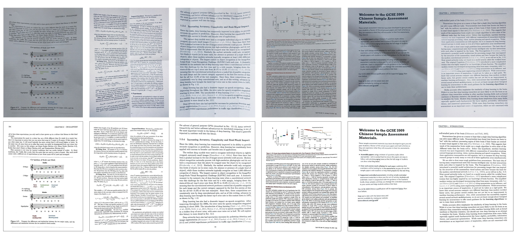

Document Rectification and Illumination Correction using a Patch-based CNN
Xiaoyu Li 1
Bo Zhang 1, 2
Jing Liao 3
Pedro V. Sander 1
1 The Hong Kong University of Science and Technology
2 Microsoft Research Asia
3 City University of Hong Kong

Fig. 1. Geometric and illumination correction. The top row shows the input images and the bottom row shows the results of our approach.
Abstract
We propose a novel learning method to rectify document images with various distortion types from a single input image.
As opposed to previous learning-based methods, our approach seeks to first learn the distortion flow on input image
patches rather than the entire image. We then present a robust technique to stitch the patch results into the rectified
document by processing in the gradient domain. Furthermore, we propose a second network to correct the uneven illumination,
further improving the readability and OCR accuracy. Due to the less complex distortion present on the smaller image patches,
our patch-based approach followed by stitching and illumination correction can significantly improve the overall accuracy
in both the synthetic and real datasets.
Downloads
BibTeX
@article{li2019docrect,
author = {Li, Xiaoyu and Zhang, Bo and Liao, Jing and Sander, Pedro V.},
title = {Document Rectification and Illumination Correction using a Patch-based CNN},
journal={ACM Transactions on Graphics (TOG)},
month = {11},
year = {2019}
}
Acknowledgements
We thank the anonymous reviewers for valuable feedback on our manuscript. This work was partly supported by Hong Kong ECS
grant # 21209119, Hong Kong UGC, and HKUST DAG06/07.EG07 grants.